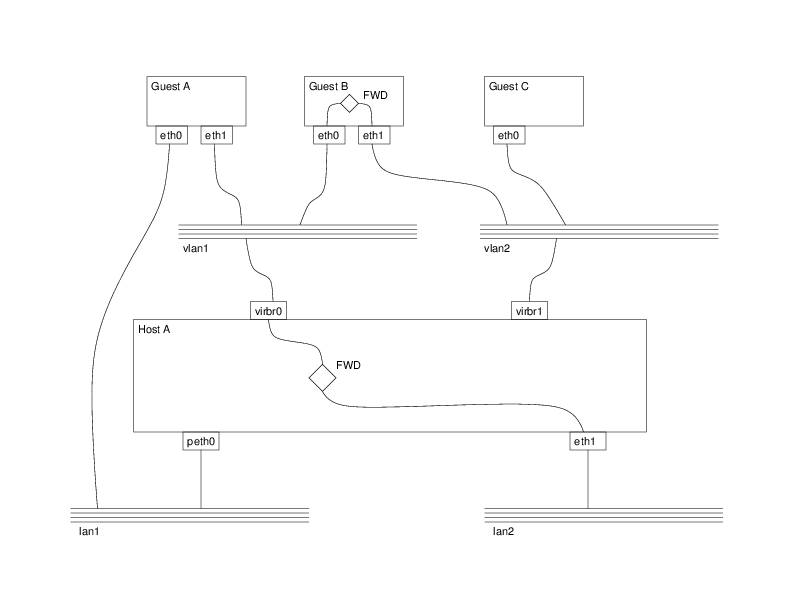
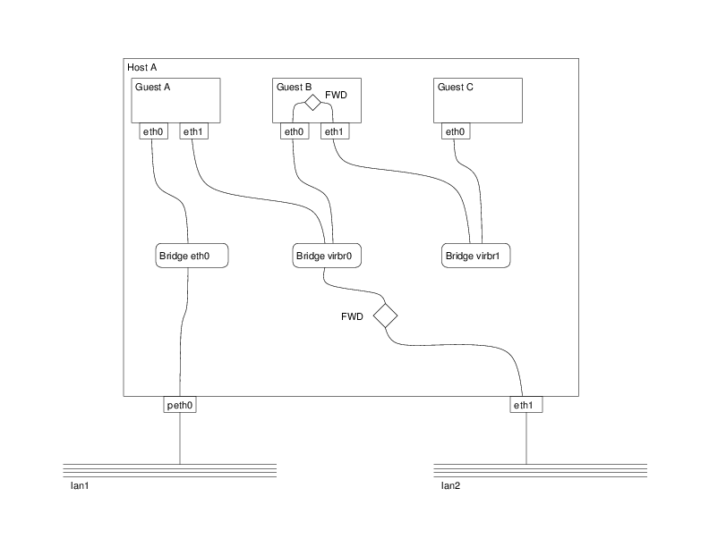

Network management architecture
Architecture illustration
The diagrams below illustrate some of the network configurations enabled by the libvirt networking APIs
- VLAN 1. This virtual network has connectivity
to
LAN 2with traffic forwarded and NATed. - VLAN 2. This virtual network is completely isolated from any physical LAN.
- Guest A. The first network interface is bridged
to the physical
LAN 1. The second interface is connected to a virtual networkVLAN 1. - Guest B. The first network interface is connected
to a virtual network
VLAN 1, giving it limited NAT based connectivity to LAN2. It has a second network interface connected toVLAN 2. It acts a router allowing limited traffic between the two VLANs, thus givingGuest Cconnectivity to the physicalLAN 2. - Guest C. The only network interface is connected
to a virtual network
VLAN 2. It has no direct connectivity to a physical LAN, relying onGuest Bto route traffic on its behalf.
Logical diagram

Physical diagram
